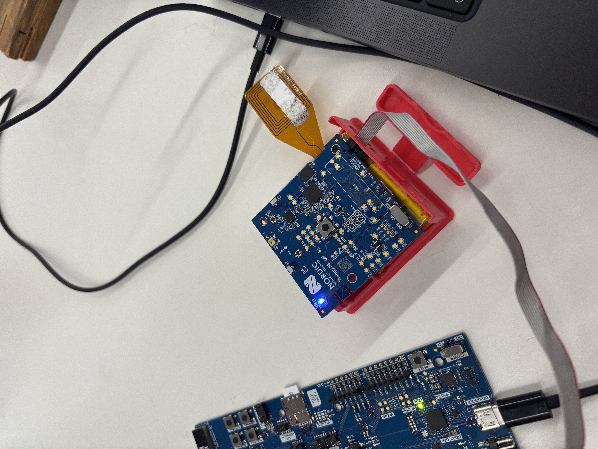
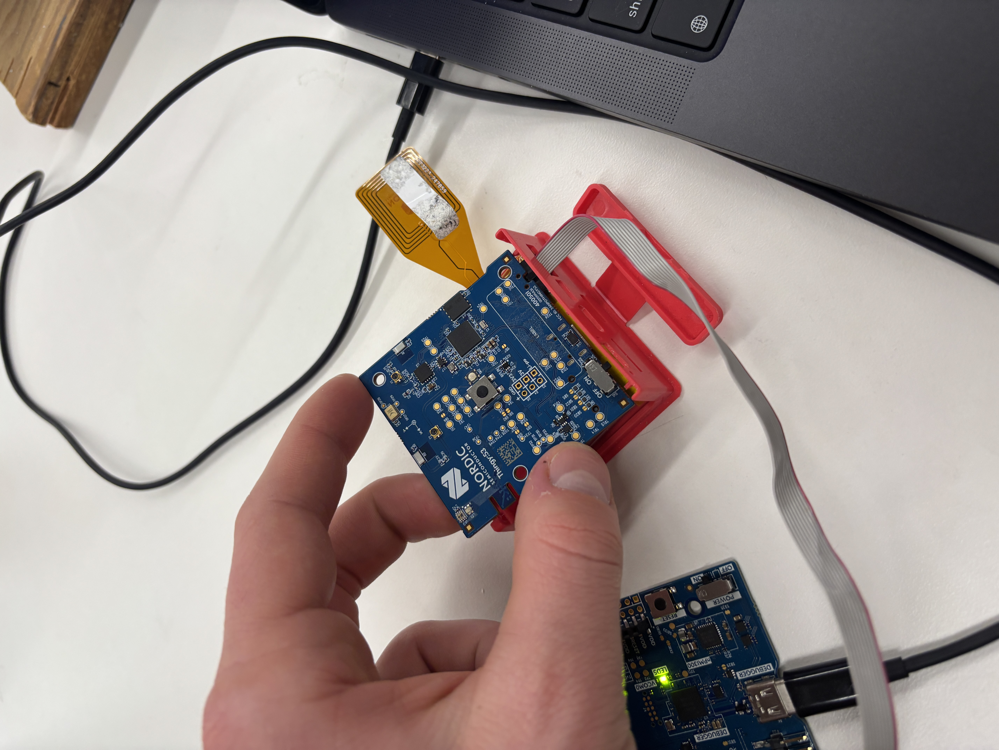

CNC
Project Overview
This project explored Computer Numerical Control (CNC) machining techniques, focusing on creating precise components through automated manufacturing processes.
Manufacturing Process
Design
Created CAD models and generated toolpaths for CNC machining.
Setup
Prepared the CNC machine and materials for manufacturing.
Machining
Executed the CNC operations and monitored the process.
Results

Final machined component

CNC machining process
Challenges & Solutions
Manufacturing Challenges
Encountered challenges in toolpath optimization and material selection.
Solutions:
- Optimized cutting parameters
- Improved tool selection
- Enhanced fixturing methods